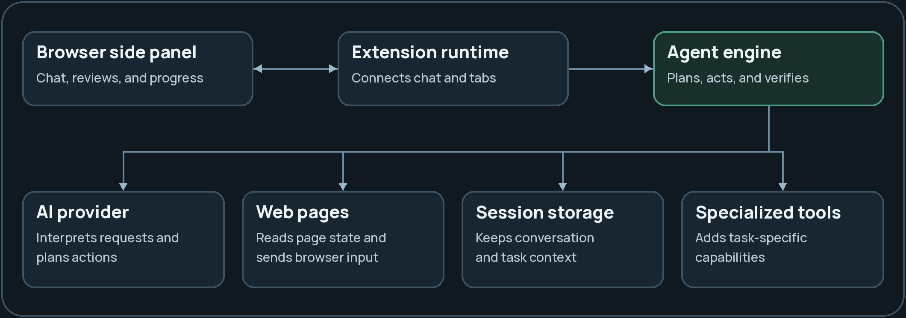

Browser tasks · AI providers · Architecture · Page data
Browser tasks
Open a page and tell Smith what outcome you want. You can ask it to summarize the page, explain quiz choices, or complete a series of steps such as filling a form.
Choose Review to approve page input or Turbo to run requested actions, including submissions, automatically. The mode applies to the whole run. Agent Smith can also read charts and handle orders on a verified ExpertOption Demo account.
AI providers
Open Settings, select an AI provider, and enter its credentials if required. Choose Save and load models, then select a model. To use screenshots, pick a vision-capable model and enable Send page screenshots to the selected AI model.
For local OpenCode setup or Antigravity OAuth, use the provider instructions in the README.
Architecture

The side panel passes requests to the extension service worker. The engine uses the selected model to plan actions, reads page context through the content script, and uses Chrome DevTools Protocol for pointer and keyboard input. Conversations are stored in IndexedDB.
Page data
For browser tasks, the selected provider can receive relevant page text and controls along with your request. If screenshots are enabled for a vision-capable model, the active page image can also be sent to that provider.